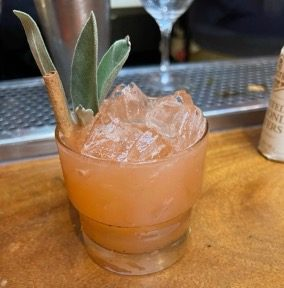
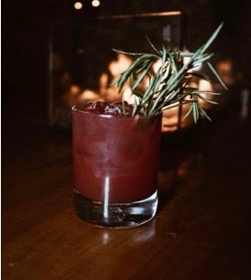
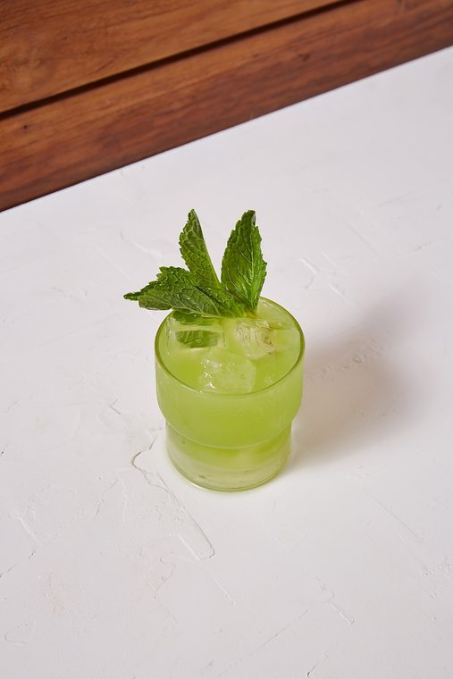
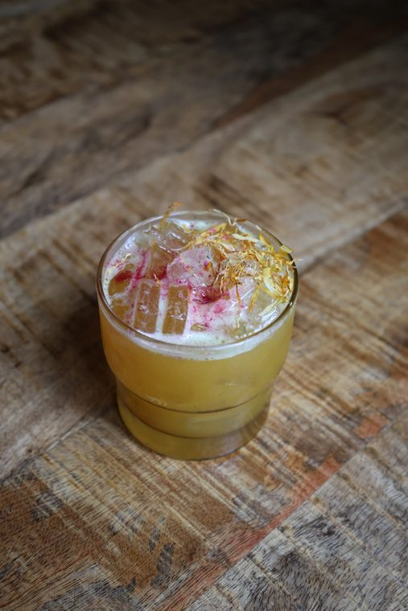
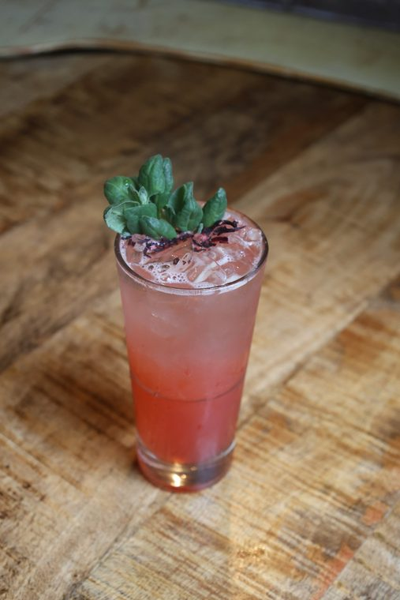
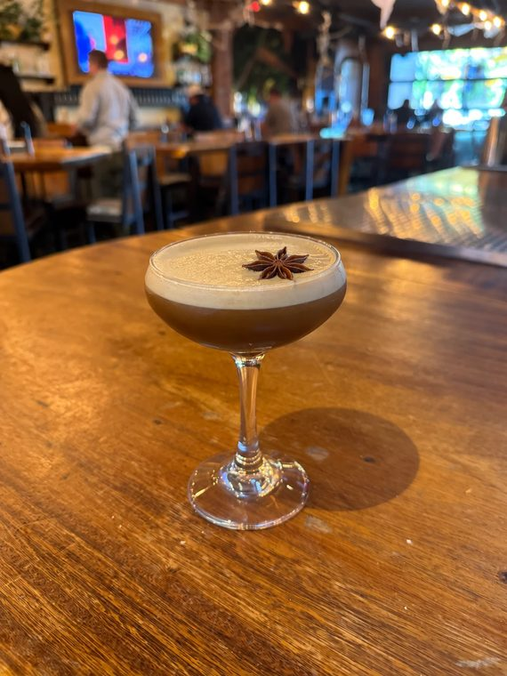

Seven drinks. Learn the pattern first — five of them are the exact same five moves, and the other two break it in one place each. Once you know where they break, you know the menu.
The five moves
This is the whole job on most of these drinks.
Combine everything in the shaker tin
Add ice
Shake — hard, 10–12 seconds, until the tin frosts
Strain into the glass
Garnish
Three things change from drink to drink: what goes in the tin, what glass it lands in, and what goes on top. Everything else is the same. Where a drink genuinely breaks the pattern, there's an orange Watch out box — those are the four things that actually get sent back.
Group 1 of 3 · Five drinks
Shaken, served over fresh ice
The five moves, straight through. Always fresh ice in the glass — never the ice you shook with.
Channel Orange
Pour into the tin
2.00 ozChannel Orange Biz
1.75 ozPear Chai Biz
0.50 ozLemon juiceFresh
Total pour 4.25 oz
Then
Add ice and shake.
Strain over fresh ice in an emulsive glass.
Finish
Glass
Emulsive
Ice
Fresh ice
Garnish
Sage + cinnamon stick

What it should look like
Don't Worry About It Sweetheart
Pour into the tin
2.00 ozDWAIS Biz
3.50 ozCider Mix Biz
0.50 ozLemon juiceFresh
Total pour 6.00 oz
Then
Add ice and shake.
Strain over fresh ice in an emulsive glass.
Finish
Glass
Emulsive
Ice
Fresh ice
Garnish
Rosemary sprig

What it should look like
Green Goddess
First, prep the glass
rinsePernodCoat the inside of an emulsive glass, then dump the excess
Pour into the tin
2.75 ozGoddess Biz
0.50 ozSpicy cucumber juice
1.00 ozLemon juiceFresh
Total pour 4.25 oz
Then
Add ice and shake.
Strain over fresh ice in the rinsed glass.
Finish
Glass
Emulsive — Pernod-rinsed
Ice
Fresh ice
Garnish
Mint bushel

What it should look like
Watch out
The Pernod never goes in the tin. It coats the glass and gets dumped — you're after the aroma, not the pour. Rinse the glass before you shake, so the drink isn't sitting while you do it.
LMF 2.0
Pour into the tin
4.00 ozLMF 2.0 Biz
0.25 ozTurmeric juice
0.50 ozLemon juiceFresh
Total pour 4.75 oz
Then
Add ice and shake vigorously.
Strain into an emulsive glass over fresh ice.
Dust lightly with dragonfruit powder.
Add a small pinch of calendula flowers.
Finish
Glass
Emulsive
Ice
Fresh ice
Garnish
Light dusting of dragonfruit powder, then a small pinch of calendula flowers

What it should look like
Watch out
The garnish is two separate motions, in order: dust first, then the pinch of calendula on top. Dusting over the flowers buries them. Keep the dusting light — you're tinting the surface, not coating it.
No New Friends
Pour into the tin
3.00 ozNNF Biz
1.00 ozLime juiceFresh
Total pour 4.00 oz + soda
Then
Add ice and shake vigorously.
Strain over fresh ice into the 12 oz tall glass.
Top with soda water.
Finish
Glass
12 oz tall
Ice
Fresh ice
Garnish
Hibiscus leaves + tarragon sprig

What it should look like
Watch out
The soda goes in after the shake, in the glass — never in the tin. Shaking soda kills the bubbles and can blow the tin apart in your hands. The soda isn't measured: it tops the glass, which is why this is the only drink here without a fixed total.
Group 2 of 3 · One drink
Shaken, served up
Same five moves, but nothing lands in the glass except the drink. Chill the coupe before you start.
Chai Hard
Pour into the tin
2.25 ozTitos Chai Biz
1.00 ozBlonde espresso
1.50 ozPecan brown sugar syrup
pinchHimalayan salt
Total pour 4.75 oz
Then
Add ice and shake.
Strain up into a chilled coupe.
Finish
Glass
Coupe / martini
Ice
None — served up
Garnish
1 star anise

What it should look like
Group 3 of 3 · One drink
Built in the glass
No tin, no shake. Everything happens in the glass the guest drinks from.
Scarlett Spritz
Build in this order
Pack a wine glass with ice.
Pour 2.50 oz Spritz Biz over the ice.
Top with 5.00 oz Prosecco.
Stir once with a bar spoon, lifting from the bottom.
Total pour 7.50 oz
Finish
Glass
Wine
Ice
Packed
Garnish
Rosemary
Watch out
Never shake this one. Order matters: ice, then biz, then Prosecco — the biz sits underneath and the bubbles lift it as you stir. One gentle lift from the bottom is the whole stir; whipping it flattens the Prosecco and you've made a warm, flat spritz.
Quick reference
All seven at a glance
Cover the right-hand columns and work down the list. If you can call the glass and the garnish from the name, you know the menu.